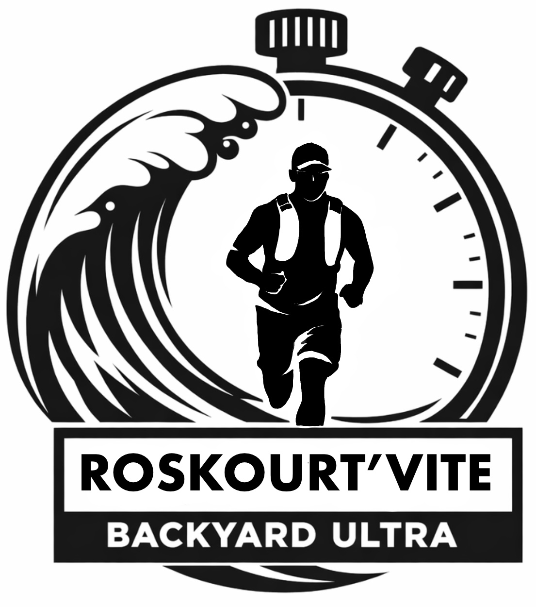

Nos partenaires et soutiens

Le Backyard Ultra est un format d'endurance né aux États-Unis : pas de distance fixe, pas de classement par temps — seulement la volonté de tenir plus longtemps que les autres.
Toutes les heures, un départ est lancé. Les coureurs doivent boucler un tour de 6,8 km et se réaligner sur la ligne de départ avant l'heure suivante. Qui manque le départ est éliminé.
La course continue jusqu'à ce qu'il ne reste qu'un seul participant. Pour être déclaré vainqueur, il doit effectuer une boucle de plus que le dernier adversaire à avoir abandonné.
L'épreuve peut durer jusqu'à 24 heures. Ce n'est pas une course contre la montre — c'est une course contre soi-même.
Parcours : Boucle du parking du Château du Laber jusqu'à la pointe de Perharidy — sentiers côtiers et chemins communaux avec vue sur la mer.
La course est ouverte à tous, quel que soit le niveau. Aucun certificat médical n'est demandé. Le paiement se fait sur place le 6 juin en espèces ou chèque, ou directement en ligne via Klikego.
| Étudiants | Gratuit |
| Bénévoles | Gratuit (inscription obligatoire via Google Forms) |
| Personnel de la Station Biologique de Roscoff | 3 € |
| Autres (amis, famille…) | 5 € |
Choisissez votre mode d'inscription
📍 Lieu : Bâtiment Marie Goldsmith – Station biologique de Roscoff, 99 rue de Roc'h Klehure, 29680 Roscoff
Une boucle de 6,8 km à compléter toutes les heures. Départ à 9h00, puis à chaque heure pleine. Manquer un départ = abandon immédiat.
Le vainqueur est le dernier participant en course, ayant effectué une boucle de plus que le dernier adversaire ayant abandonné. Récompenses pour le top 3 hommes et top 3 femmes.
L'épreuve peut durer jusqu'à 24 heures. En cas d'égalité à l'issue du temps limite, le classement est établi selon l'ordre d'arrivée lors de la dernière boucle.
Lampe frontale obligatoire pour toute boucle en faible luminosité. Port d'éléments réfléchissants fortement recommandé.
Un plan de sécurité complet est mis en place : base de vie centrale accessible après chaque boucle, bénévoles identifiés en permanence, premiers secours et matériel médical sur place.
Environnement naturel sensible : aucun déchet sur le parcours, respect de la faune et de la flore. Tout comportement dangereux entraîne l'exclusion immédiate.
Nous sommes des étudiants en licence BIO-MAD (Biologie, Modélisation et Analyse de Données) à la Station biologique de Roscoff — CNRS / Sorbonne Université. L'association a été fondée en début d'année 2026 : toute jeune, mais portée par une vraie envie de faire.
Notre terrain de jeu, c'est Roscoff et sa côte. Notre conviction, c'est que le sport — la course à pied en particulier — n'a pas besoin de grand-chose pour exister. Juste un territoire et des gens qui ont envie de bouger ensemble. On a la chance d'être ici, autant s'en servir.
La Roskourt'Vite, c'est ça : créer des événements qui rassemblent, qui font bouger, qui ancrent une communauté dans son environnement. Une première édition, et déjà l'envie de recommencer chaque année.
« Ce projet vise à faire vivre le sport localement. »
— Les organisateurs de la Roskourt'Vite, Le Télégramme, 12 mai 2026
Trois étudiants de la Station biologique de Roscoff lancent une nouvelle épreuve sportive inédite dans la commune : la Roskourt'Vite, un Backyard Ultra le 6 juin entre le Laber et Perharidy.
Lire l'article → Ouest-France · Mai 2026Format backyard ultra, boucle de 6,8 km entre le Laber et Perharidy, tarifs accessibles, animations tout au long de la journée… tout ce qu'il faut savoir pour participer.
Lire l'article →Les photos de la 1ère édition arrivent bientôt